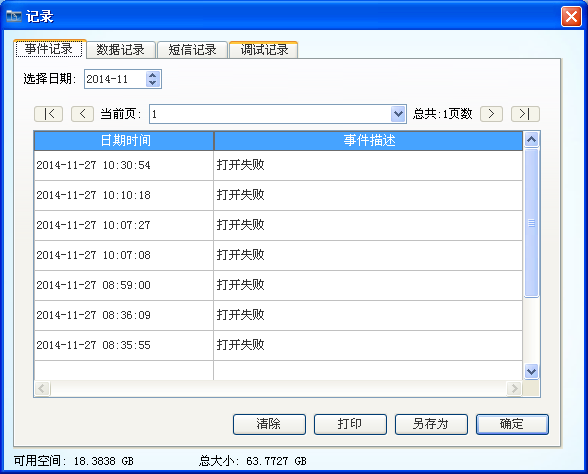
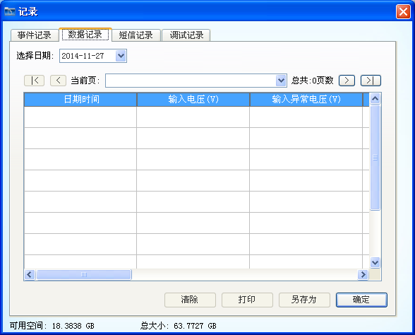
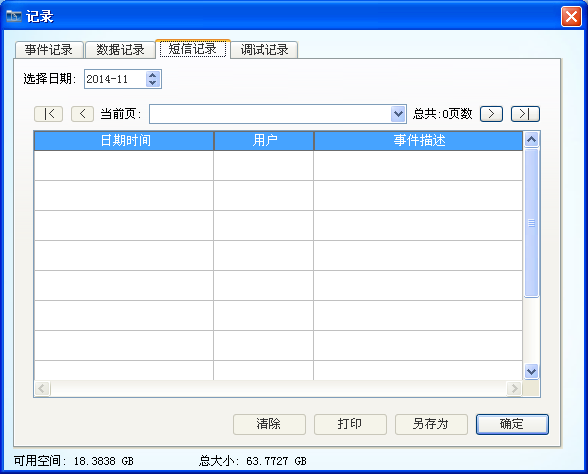
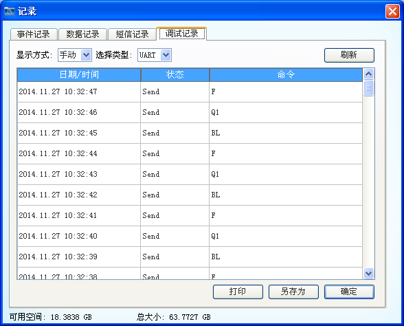

| UPSmart使用手册 |
| 记录 |
|
|
|  |
| 图1：事件记录 |
|  |
| 图2：数据记录 |
|  |
| 图3：短信记录 |
|  |
| 图4：调试记录 |
注1：如果没有人工清除记录，为了保证数据的可追溯性，软件不会自行清除记录，当软件提醒磁盘空间少于10%时，请自行清除需要清除的记录，并且做好保存。
注2：清除日志记录包括清除一个月前、三个月前、六个月前、一年前及全部记录。选择的时间段是针对自然时间，如清除一个月前记录，即清除当前月外的所有记录。